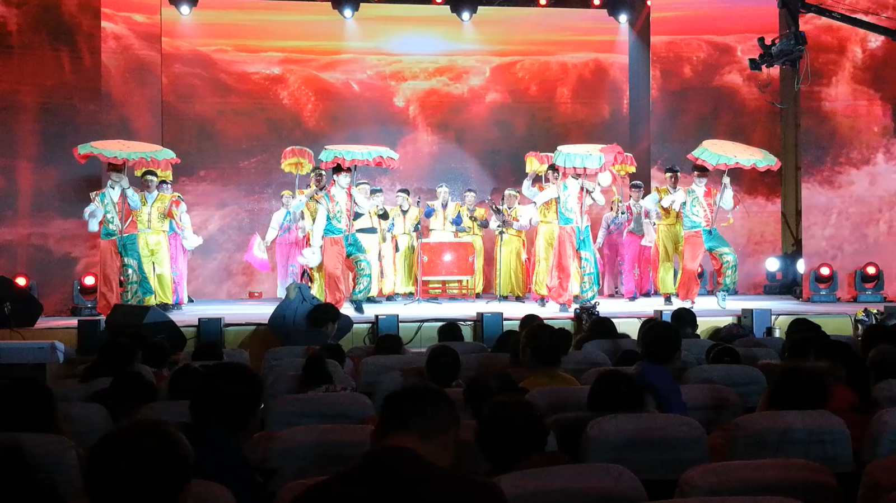

鼓子秧歌简介
济阳鼓子秧歌是一种具有悠久历史和深厚文化底蕴的传统舞蹈，是山东三大秧歌之一。 它起源于明朝永乐年间，已有2000多年的发展史，是黄河文化的优秀遗产。济阳鼓子秧歌的表演形式包括“ 街筒子”和“跑场子”。“街筒子”是秧歌队在行进中表演，而“跑场子”则是在场地上的表演。秧歌队的成员通常包 括伞、鼓、棒、花等角色，其中伞有丑伞和小伞之分，鼓有大鼓和小鼓之别，棒有长棒和短棒之异，花则有拉花 和扇花之别。这些角色通过各自独特的动作和道具，展现出丰富的舞蹈内涵和鲜明的地方特色济阳鼓子秧歌的 特点是锣鼓铿锵有力，舞姿粗犷豪放，气势恢弘磅礴，情感纯朴热烈。它的表演不仅体现了鲁北人民豪爽乐观、 大方热情的性格，也具有旺盛的生命力和鲜明的地方风格。
图为 济阳鼓子秧歌参加中菲文化交流活动
图为 首届中国国际文化旅游博览会“非物质文化遗产月”启动仪式演出照片
济阳鼓子秧歌的传承和发展受到了政府和社会的广泛关注。2006年12月31日，济阳鼓子秧歌被省政府确定为第一批省级非物质文化遗产。2008年6月7日，济阳鼓子秧歌被列入第二批国家级非物质文化遗产扩展项目名录。为了保护这一传统艺术形式，济南市济阳区文化馆作为项目保护单位，进行了一系列的传承和保护工作，包括在校园中开展教学活动，组织展演活动等。
在现代社会，济阳鼓子秧歌不仅在节日庆典中扮演重要角色，还成为了一种独特的文化符号，展现了传统文化的魅力和活力。

图为 济阳鼓子秧歌参加全运会
济阳鼓子秧歌的历史与派别：
济阳区位于鲁北平原南部，自然地理环境优越，拥有丰富的生物资源和良好的农业生产条件。社会文化环境深厚，受齐鲁文化影响，具有悠久的历史和丰富的文化遗产，为鼓子秧歌的形成提供了土壤。济阳鼓子秧歌基本形成了三大流派，一是以仁风镇流河村为代表“老慢板”。打击乐伴奏，节奏舒缓，速度缓慢，苍劲稳健。扛伞的主要动作有蹲伞、跑伞、踢伞、拧伞。慢板鼓子秧歌的特点是：节奏较慢、动作舒展飘逸，刚柔相济，大鼓大锣伴奏，气势雄浑磅礴，十分耐听耐看，这一派最见功夫，大有讲究。二是以仁风镇司家坊村为代表的快板“鼓子秧歌”，他们的表演为“插伞”，队伍庞大，伞、鼓、棒、花俱全。此派以仁风镇司家坊村的秧歌为代表，这一派的特点是节奏欢快热烈，舞步矫健潇洒，角色若以所持道具来分则“伞”“鼓”“棒”“花” 一应俱全。三是以曲堤镇金李村为代表的小伞鼓子秧歌，他们的表演为“举伞”、“鼓子”、 “地花”三种角色。这一派的特点是以小伞领舞，多以两队或四队出场，舞蹈动作多，场面变化快。举伞的风格特点是，文场节奏快，不击鼓 , 主要是驳花为主。武场节奏慢，击鼓，铿锵有力。开场精神洒脱，刹场干净利落，具有美、情、神的艺术魅力。
图为 小伞秧歌
济阳鼓子秧歌的文化解读：
济阳鼓子秧歌不仅是艺术表演，更是一种文化符号的传递。其道具与服饰的设计不仅实用，更蕴含着丰富的象征意义，如伞、鼓等道具代表着信仰崇拜与身份地位，而服饰则体现了儒家“伦理本位”的思想，通过角色分配彰显长幼有序的社会秩序。场图作为抽象艺术符号，不仅体现了平衡对称的审美观念，也蕴含着和谐共处的哲学思想，展现了天人合一的和谐意识。
鼓子秧歌对生命情调的关怀：
济阳鼓子秧歌作为一种民间艺术，满足了人们的精神文化需求，弘扬了优秀传统文化内核。它在专业舞台化方面具有训练价值，对舞者的身体素质有显著提升作用。
图为 济阳区少儿春晚济阳鼓子秧歌表演
共同体视阈下鼓子秧歌的社会认同：
济阳鼓子秧歌的传承与发展促进了中华民族共同体意识，增强了社会认同感。济阳鼓子秧歌不仅是济阳区重要的民俗、节庆活动形式，也是济阳地区独特文化精神的体现，承载着丰富的历史和文化信息。它体现了中华民族优秀的文化价值和审美情趣，展现了中华民族的创造力。是精神文明建设不可或缺的艺术瑰宝，具有很高的艺术欣赏价值和民族舞蹈的经典地位。
作为一种非物质文化遗产，济阳鼓子秧歌的保护和传承对于弘扬民族文化、促进地方文化发展具有重要意义。
图为 济阳春晚济阳鼓子秧歌表演
鼓子秧歌的特点：
一是道具运用的独特性。济阳鼓子秧歌的道具如鼓、伞、棒、花等不仅具有实用功能，还蕴含丰富的象征意义，如鼓象征力量与勇气，伞寓意遮风挡雨和平安吉祥。二是动作设计的生活性与精神表达。鼓子秧歌的动作设计源于农民的日常生活，既展现了劳动人民的喜怒哀乐，又蕴含着深刻的社会寓意和民族精神。如脚颠膝微颤、手臂走弧线，这些特征与鲁北地区的地理环境和生产劳作方式密切相关。这些动作不仅反映了当地人民的生活习惯，也体现了他们对自然的适应和尊重。济阳鼓子秧歌的动作风格体现了沉稳挺拔、刚柔并济的特点，这与鲁北地区的自然地貌、农耕活动的生产方式、祈求丰收的宗教信仰等因素有关。这种风格不仅展示了力量与美感的结合，也传达了对生活的热爱和对未来的期望。

图为 济阳鼓子秧歌参加山东省非遗月活动
鼓子秧歌的文化价值:
济阳鼓子秧歌的文化价值有两个方面。一方面它承载着农耕文化的精髓，深刻反映了农耕文化的特点，其动作设计和道具运用都与农业生产紧密相关，体现了中国人民与自然和谐共生的精神。另一方面它儒家思想的鲜活载体，它的结构布局和动作编排体现了儒家文化中的圆融、有序、务实、重德、自强不息和宽容等价值观。
图为 济阳鼓子秧歌相关报道
济阳鼓子秧歌的定点表演：
济阳鼓子秧歌的表演形式包括定点表演和行进中表演（街筒子、串街或行程）。秧歌队在行进中表演时，乐队开路，伞、鼓、棒、花随后，通过交换位置和穿插队形达到表演高潮。定点表演的主体部分是“跑场子”，分为打场子、按场和收场三个表演段层。打场子通过武术、高跷等方式扩大演出场地；按场分文场、武场、文武场，展现不同的表演风格；收场由头伞示意，停止表演。
图为 大伞示意图
济阳鼓子秧歌的当代传承与发展：
济阳鼓子秧歌在当代迎来了新的繁荣，多次参加全国民间汇演并获奖，被誉为“民族舞蹈之经典”。济阳区被命名为“中国民间艺术之乡”，鼓子秧歌入选首批国家级“非遗”扩展项目。济阳建立了鼓子秧歌保护基地，确定了传承人，并提供补贴资金用于艺术的研究和传承。同时，建立了培训基地，广泛开展鼓子秧歌培训，普及表演技艺。
图为 姚大新老师给北京舞蹈学院学生传授济阳鼓子秧歌知识
图为 济阳鼓子秧歌参加春晚

图为 姚大新老师与爱女同北京舞蹈学院高度教授高度合影
图为 济阳鼓子秧歌赴法国演出照
济阳鼓子秧歌面临的困境：
一是传承人才青黄不接。人才流失严重，演员年龄偏老化，专业队伍存在技艺水平参差不齐、人员流动性强等问题。二是受众人群日益减少。老一辈受众衰退，中年受众断层，青少年缺乏认同感，发展劲头不足。三是传播手段滞后单调。宣传不足，未能有效利用现代媒体，文化差异性传播不畅。四是传承发展和创新资金不足。总体投入资金不足，依赖乡镇财政，缺乏社会资金投入。
传承人的当代价值与传承趋势：
传承人不仅是原生态舞蹈艺术的载体，还是创新的主力军。未来的传承趋势包括继承传统与推陈出新，实现老少适宜、全民共舞，深化民俗艺术与课堂教学的融合，以及历时传承与共时传承的水乳交融。
图为 国家级非遗之家
图为 济阳鼓子秧歌演员集体合影
济阳鼓子秧歌的发展对策：
一是聚焦人才队伍，建立人才储备库。固定现有演出人员，整合资源，建立人才储备库，优化队伍结构。二是尊重流变性，注入当代创意元素。与时代精神结合，创新表演形式和内容，融合现代音乐、舞蹈元素。 三是加强对外交流，探索文化旅游品牌。增加出境率，学习先进经验，打造特色小镇品牌。四是宣传重要性，加大资金扶持力度。利用媒体广泛宣传，加大政府扶持力度，整合资金，打造品牌。五是储备后备力量，坚定鼓子秧歌进校园。与学校建立长期联系，聘请传承人作为辅导老师，打造精干队伍。
图为 姚大新老师在小学开展教学活动